Nyzo version 579 (commit on GitHub) adds an automatic whitelisting mechanism to the verifier and utilizes this mechanism to automatically whitelist the sentinel on its managed verifiers.
This version affects the verifier and the sentinel. For automatic whitelisting to activate, this version or later must be installed on both the verifier and sentinel.
Automatic whitelisting is a two-step process. The first step fetches an IP address from a remote verifier. The second step sends a request to the remote verifier asking for the IP address to be whitelisted. Inclusion of an IP address in the whitelist request is necessary to eliminate the chance of fast replays of whitelist requests from other IP addresses.
In MeshListener.response(), IpAddressRequest53 and WhitelistRequest424 are now processed. The requester's IP address is sent in response to IpAddressRequest53, and a WhitelistResponse is sent in response to WhitelistRequest424. If the whitelist request is valid, the actual whitelisting is performed in WhitelistResponse.forRequest().
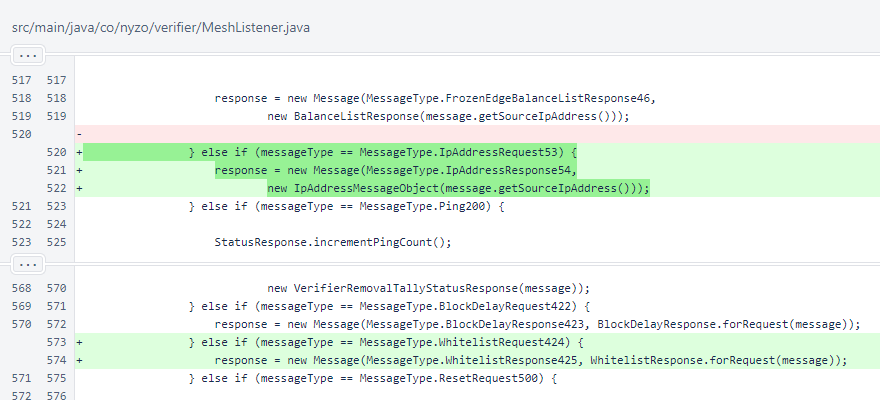In Message, the dynamicWhitelist map was added to store whitelist entries, and a dynamicWhitelistInterval specifies a 10-minute lifespan for entries.
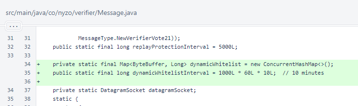In Message.processContent(), processing of new message types was added. IpAddressResponse54 and WhitelistRequest424 both contain IpAddressMessageObject payloads, and WhitelistResponse425 contains a WhitelistResponse.
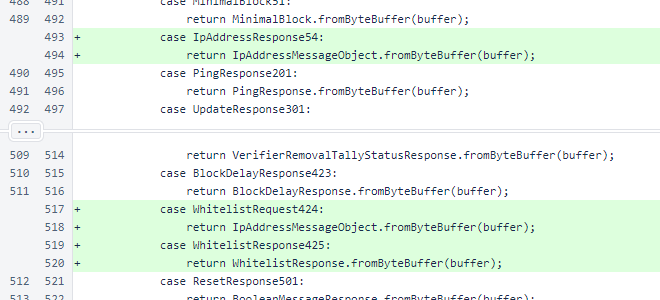Message.ipIsWhitelisted() now checks both the static whitelist and dynamicWhitelist.
Message.whitelistIpAddress() adds the specified address to the dynamicWhitelist map with the current timestamp.
Message.performMaintenance() removes old entries from dynamicWhitelist.
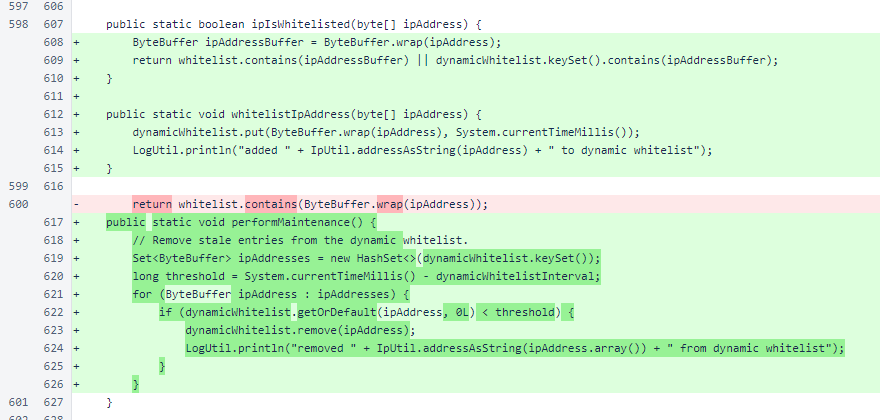The new message types were added to the MessageType enumeration.
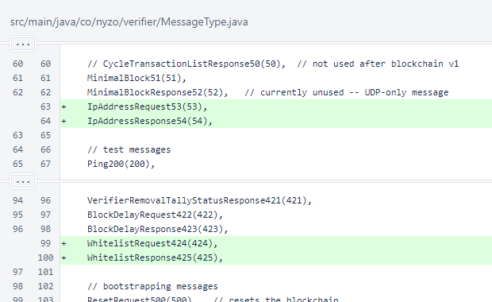Maintenance of the dynamic whitelist in the Message class was added to the Verifier main loop.
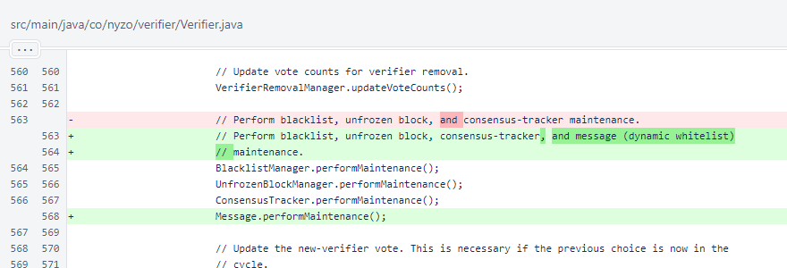IpAddressMessageObject encapsulates an IP address in a MessageObject.
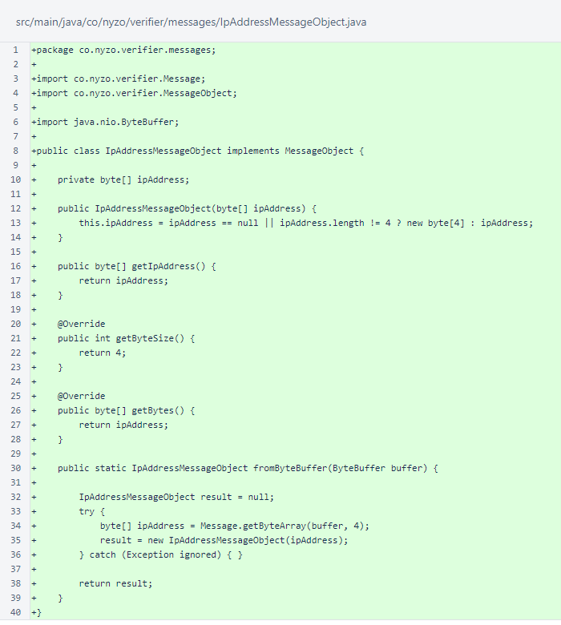WhitelistResponse processes a WhitelistRequest424. Like BlockDelayResponse, this class is a subclass of BooleanMessageResponse. If the whitelist request is valid, the requester's IP is whitelisted. Otherwise, appropriate feedback regarding failure is provided.
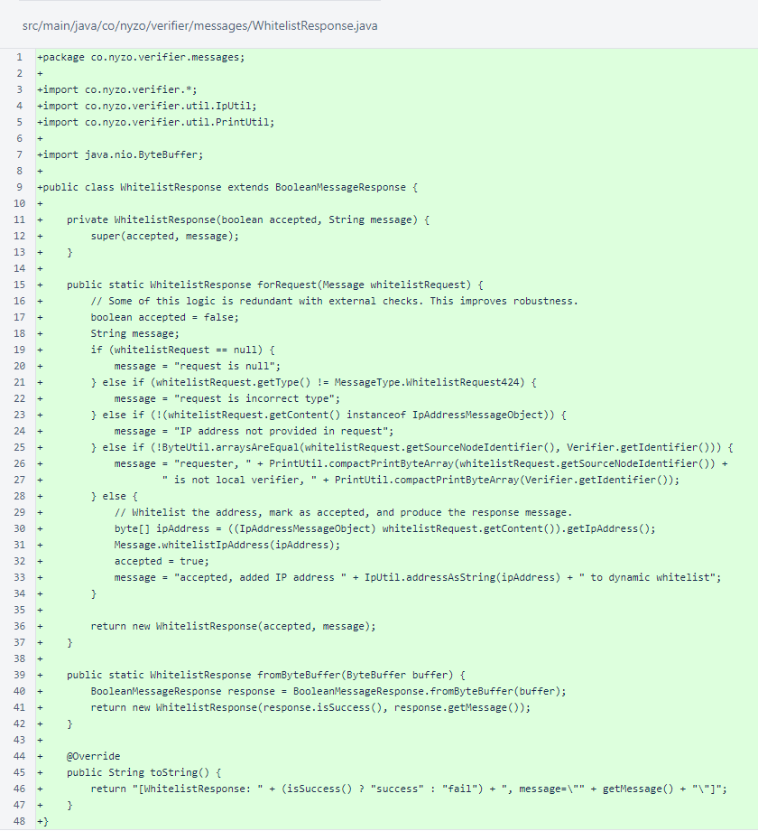Sentinel defines a whitelistUpdateInterval that is half of the dynamicWhitelistInterval in Message. This allows a sentinel to remain continuously whitelisted even if a single whitelist request fails.
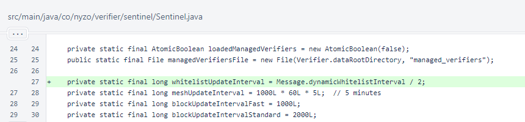In Sentinel.start(), between loading of the managed verifiers and initialization of the frozen edge, an attempt to whitelist all verifiers is now made.
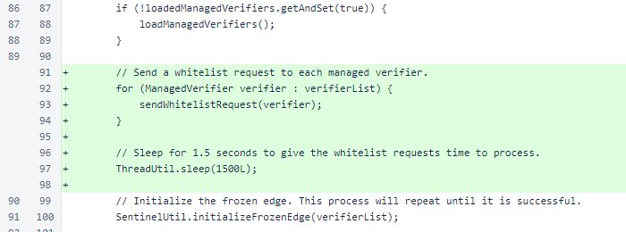Periodic whitelisting is now performed in each managed verifier's sentinel loop.
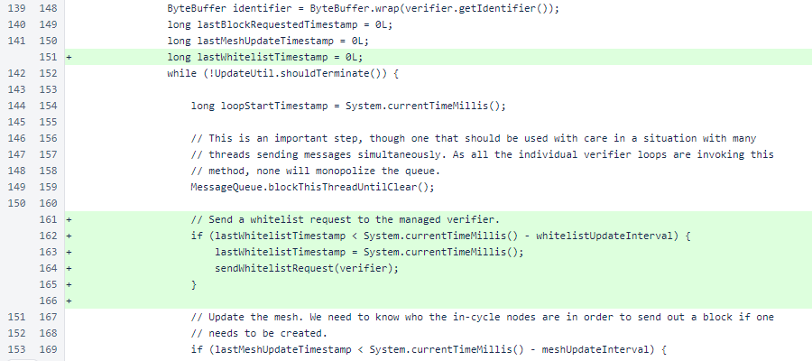Sentinel.checkResponseIdentifier() was added to reduce verbosity of code. It records the response identifier and returns a value indicating whether the message has a valid response identifier.
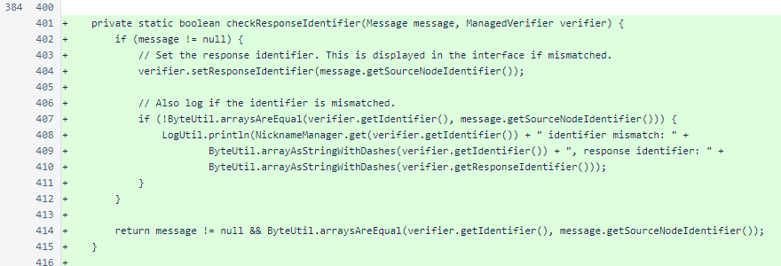Sentinel.sendWhitelistRequest() performs the two-step fetching of IP address and sending of the whitelist request. This method uses the checkResponseIdentifier() method to provide succinct response identifier verification of the IP address request. The result of the whitelist request is logged.
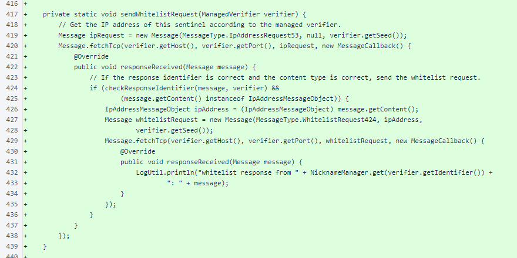The checkResponseIdentifier() method was used to make the message callback in Sentinel.updateMesh() less verbose.
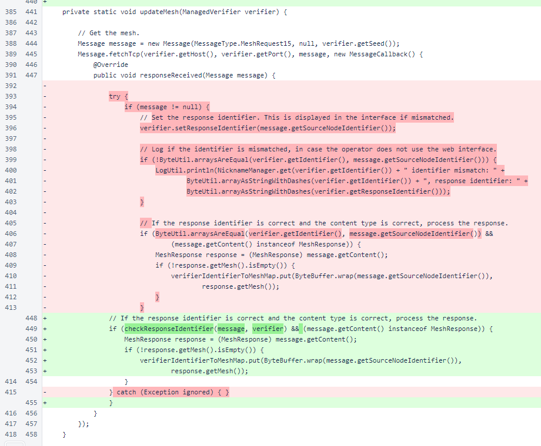The checkResponseIdentifier() method was also used to make the message callback in Sentinel.updateBlocks() less verbose.
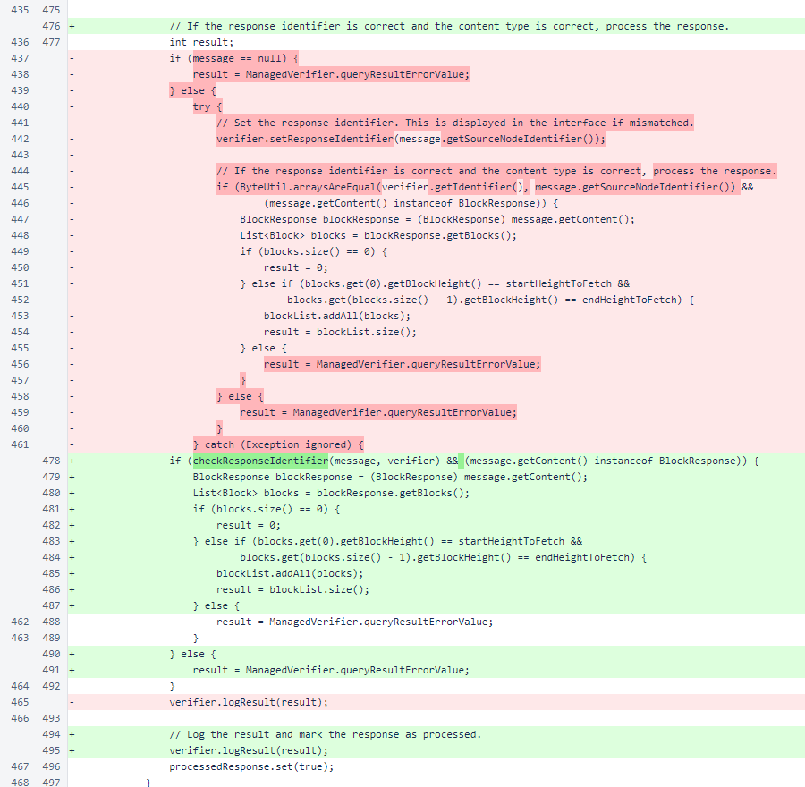